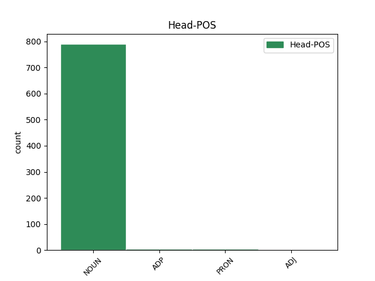

Distribution of features within this leaf

Agreement Rules sorted by frequency.
- When the dependent token is the modifer(mod) of the head token, and the head token is NOUN and the dependent token is NOUN.
1 dhá _ _ _ _ 0 _ _ _
2 chill _ _ _ _ 0 _ _ _
3 leictreacha _ _ _ _ 0 _ _ _
4 nó _ _ _ _ 0 _ _ _
5 níos _ _ _ _ 0 _ _ _
6 mó _ _ _ _ 0 _ _ _
7 a _ _ _ _ 0 _ _ _
8 tháirgeann _ _ _ _ 0 _ _ _
9 leictreachas _ _ _ _ 0 _ _ _
10 ; _ _ _ _ 0 _ _ _
11 tarlaíonn _ _ _ _ 0 _ _ _
12 sé _ _ _ _ 0 _ _ _
13 seo _ _ _ _ 0 _ _ _
14 nuair _ _ _ _ 0 _ _ _
15 a _ _ _ _ 0 _ _ _
16 imoibríonn _ _ _ _ 0 _ _ _
17 na _ _ _ _ 0 _ _ _
18 ceimiceáin _ _ _ _ 0 _ _ _
19 laistigh _ _ _ _ 0 _ _ _
20 den _ _ _ _ 0 _ _ _
21 chadhnra _ _ _ _ 0 _ _ _
22 ar _ _ _ _ 0 _ _ _
23 a _ _ _ _ 0 _ _ _
24 chéile _ _ _ _ 0 _ _ _
25 ; _ _ _ _ 0 _ _ _
26 braitheann _ _ _ _ 0 _ _ _
27 vóltas vóltas NOUN Noun Gender=Masc|Number=Sing 0 _ _ _
28 cadhnra cadhnra NOUN Noun Case=Gen|Gender=Masc|Number=Sing 27 mod _ _
29 ar _ _ _ _ 0 _ _ _
30 líon _ _ _ _ 0 _ _ _
31 na _ _ _ _ 0 _ _ _
32 gcill _ _ _ _ 0 _ _ _
33 a _ _ _ _ 0 _ _ _
34 bhíonn _ _ _ _ 0 _ _ _
35 ann _ _ _ _ 0 _ _ _
36 : _ _ _ _ 0 _ _ _
37 dá _ _ _ _ 0 _ _ _
38 mhéid _ _ _ _ 0 _ _ _
39 cill _ _ _ _ 0 _ _ _
40 is _ _ _ _ 0 _ _ _
41 ea _ _ _ _ 0 _ _ _
42 is _ _ _ _ 0 _ _ _
43 mó _ _ _ _ 0 _ _ _
44 an _ _ _ _ 0 _ _ _
45 vóltas _ _ _ _ 0 _ _ _
46 carbaihiodráití _ _ _ _ 0 _ _ _
47 . _ _ _ _ 0 _ _ _
1 Na _ _ _ _ 0 _ _ _
2 Toghranna _ _ _ _ 0 _ _ _
3 Ceantair _ _ _ _ 0 _ _ _
4 seo _ _ _ _ 0 _ _ _
5 a _ _ _ _ 0 _ _ _
6 leanas _ _ _ _ 0 _ _ _
7 : _ _ _ _ 0 _ _ _
8 Baile _ _ _ _ 0 _ _ _
9 an _ _ _ _ 0 _ _ _
10 Tóchair _ _ _ _ 0 _ _ _
11 Thoir _ _ _ _ 0 _ _ _
12 , _ _ _ _ 0 _ _ _
13 Baile _ _ _ _ 0 _ _ _
14 na _ _ _ _ 0 _ _ _
15 Cille _ _ _ _ 0 _ _ _
16 , _ _ _ _ 0 _ _ _
17 Lios _ _ _ _ 0 _ _ _
18 Conaidh _ _ _ _ 0 _ _ _
19 , _ _ _ _ 0 _ _ _
20 Droim _ _ _ _ 0 _ _ _
21 Fionn _ _ _ _ 0 _ _ _
22 , _ _ _ _ 0 _ _ _
23 Baile _ _ _ _ 0 _ _ _
24 an _ _ _ _ 0 _ _ _
25 Mhóta _ _ _ _ 0 _ _ _
26 , _ _ _ _ 0 _ _ _
27 Cluain _ _ _ _ 0 _ _ _
28 Eochaille _ _ _ _ 0 _ _ _
29 , _ _ _ _ 0 _ _ _
30 Liatroim _ _ _ _ 0 _ _ _
31 , _ _ _ _ 0 _ _ _
32 Tobar _ _ _ _ 0 _ _ _
33 an _ _ _ _ 0 _ _ _
34 Choire _ _ _ _ 0 _ _ _
35 , _ _ _ _ 0 _ _ _
36 Cill _ _ _ _ 0 _ _ _
37 Toraí _ _ _ _ 0 _ _ _
38 , _ _ _ _ 0 _ _ _
39 Coill _ _ _ _ 0 _ _ _
40 Mhór _ _ _ _ 0 _ _ _
41 , _ _ _ _ 0 _ _ _
42 Cill _ _ _ _ 0 _ _ _
43 Fraoigh _ _ _ _ 0 _ _ _
44 , _ _ _ _ 0 _ _ _
45 Cúil _ _ _ _ 0 _ _ _
46 Ó _ _ _ _ 0 _ _ _
47 bhFinn _ _ _ _ 0 _ _ _
48 , _ _ _ _ 0 _ _ _
49 Cill _ _ _ _ 0 _ _ _
50 Athracht _ _ _ _ 0 _ _ _
51 , _ _ _ _ 0 _ _ _
52 Teampall _ _ _ _ 0 _ _ _
53 an _ _ _ _ 0 _ _ _
54 Mhanaigh _ _ _ _ 0 _ _ _
55 , _ _ _ _ 0 _ _ _
56 Eachineach _ _ _ _ 0 _ _ _
57 , _ _ _ _ 0 _ _ _
58 Cill _ _ _ _ 0 _ _ _
59 Mhic _ _ _ _ 0 _ _ _
60 Treana _ _ _ _ 0 _ _ _
61 , _ _ _ _ 0 _ _ _
62 Baile _ _ _ _ 0 _ _ _
63 na _ _ _ _ 0 _ _ _
64 Sí _ _ _ _ 0 _ _ _
65 , _ _ _ _ 0 _ _ _
66 Seanchua _ _ _ _ 0 _ _ _
67 , _ _ _ _ 0 _ _ _
68 Droim _ _ _ _ 0 _ _ _
69 Colm _ _ _ _ 0 _ _ _
70 , _ _ _ _ 0 _ _ _
71 Baile _ _ _ _ 0 _ _ _
72 idir _ _ _ _ 0 _ _ _
73 Dhá _ _ _ _ 0 _ _ _
74 Abhainn _ _ _ _ 0 _ _ _
75 , _ _ _ _ 0 _ _ _
76 Achadh _ _ _ _ 0 _ _ _
77 Mhór _ _ _ _ 0 _ _ _
78 , _ _ _ _ 0 _ _ _
79 Breicshliabh _ _ _ _ 0 _ _ _
80 , _ _ _ _ 0 _ _ _
81 Droim _ _ _ _ 0 _ _ _
82 Ráithe _ _ _ _ 0 _ _ _
83 , _ _ _ _ 0 _ _ _
84 Tuaim _ _ _ _ 0 _ _ _
85 Fhobhair _ _ _ _ 0 _ _ _
86 , _ _ _ _ 0 _ _ _
87 Cill _ _ _ _ 0 _ _ _
88 Sealbhaigh _ _ _ _ 0 _ _ _
89 , _ _ _ _ 0 _ _ _
90 Cill _ _ _ _ 0 _ _ _
91 Duibh _ _ _ _ 0 _ _ _
92 Dúin _ _ _ _ 0 _ _ _
93 , _ _ _ _ 0 _ _ _
94 Cill _ _ _ _ 0 _ _ _
95 Dá _ _ _ _ 0 _ _ _
96 Loch _ _ _ _ 0 _ _ _
97 , _ _ _ _ 0 _ _ _
98 Cartrún _ _ _ _ 0 _ _ _
99 , _ _ _ _ 0 _ _ _
100 Cúil _ _ _ _ 0 _ _ _
101 Áine _ _ _ _ 0 _ _ _
102 , _ _ _ _ 0 _ _ _
103 Abhainn _ _ _ _ 0 _ _ _
104 Mhór _ _ _ _ 0 _ _ _
105 , _ _ _ _ 0 _ _ _
106 An _ _ _ _ 0 _ _ _
107 Teampall teampall NOUN Noun Definite=Def|Gender=Masc|Number=Sing 0 _ _ _
108 , _ _ _ _ 0 _ _ _
109 Eanach Eanach PROPN Noun Gender=Masc|Number=Sing 107 mod _ SpaceAfter=No
110 , _ _ _ _ 0 _ _ _
111 Carraig _ _ _ _ 0 _ _ _
112 Beannchair _ _ _ _ 0 _ _ _
113 , _ _ _ _ 0 _ _ _
114 Cúil _ _ _ _ 0 _ _ _
115 Mhuine _ _ _ _ 0 _ _ _
116 agus _ _ _ _ 0 _ _ _
117 Baile _ _ _ _ 0 _ _ _
118 an _ _ _ _ 0 _ _ _
119 Tóchair _ _ _ _ 0 _ _ _
120 Thiar _ _ _ _ 0 _ _ _
121 . _ _ _ _ 0 _ _ _
1 ' _ _ _ _ 0 _ _ _
2 Gidh _ _ _ _ 0 _ _ _
3 nár _ _ _ _ 0 _ _ _
4 éirigh _ _ _ _ 0 _ _ _
5 leo _ _ _ _ 0 _ _ _
6 an _ _ _ _ 0 _ _ _
7 corn _ _ _ _ 0 _ _ _
8 mór _ _ _ _ 0 _ _ _
9 a _ _ _ _ 0 _ _ _
10 bhíonn _ _ _ _ 0 _ _ _
11 á do ADP Poss Gender=Masc|Number=Sing|Person=3|Poss=Yes|PronType=Prs 0 _ _ _
12 lorg lorg NOUN Noun Case=NomAcc|Gender=Masc|Number=Sing 11 mod _ _
13 go _ _ _ _ 0 _ _ _
14 crua _ _ _ _ 0 _ _ _
15 ag _ _ _ _ 0 _ _ _
16 achan _ _ _ _ 0 _ _ _
17 chontae _ _ _ _ 0 _ _ _
18 a _ _ _ _ 0 _ _ _
19 sciobadh _ _ _ _ 0 _ _ _
20 leo _ _ _ _ 0 _ _ _
21 sa _ _ _ _ 0 _ _ _
22 tréimhse _ _ _ _ 0 _ _ _
23 sin _ _ _ _ 0 _ _ _
24 dar _ _ _ _ 0 _ _ _
25 le _ _ _ _ 0 _ _ _
26 Anthony _ _ _ _ 0 _ _ _
27 go _ _ _ _ 0 _ _ _
28 bhfuil _ _ _ _ 0 _ _ _
29 dul _ _ _ _ 0 _ _ _
30 chun _ _ _ _ 0 _ _ _
31 cinn _ _ _ _ 0 _ _ _
32 iontach _ _ _ _ 0 _ _ _
33 déanta _ _ _ _ 0 _ _ _
34 ag _ _ _ _ 0 _ _ _
35 foireann _ _ _ _ 0 _ _ _
36 shinsir _ _ _ _ 0 _ _ _
37 Chill _ _ _ _ 0 _ _ _
38 Dara _ _ _ _ 0 _ _ _
39 le _ _ _ _ 0 _ _ _
40 deich _ _ _ _ 0 _ _ _
41 mbliana _ _ _ _ 0 _ _ _
42 anuas _ _ _ _ 0 _ _ _
43 agus _ _ _ _ 0 _ _ _
44 go _ _ _ _ 0 _ _ _
45 bhfuil _ _ _ _ 0 _ _ _
46 seans _ _ _ _ 0 _ _ _
47 ann _ _ _ _ 0 _ _ _
48 fós _ _ _ _ 0 _ _ _
49 go _ _ _ _ 0 _ _ _
50 gcaithfidh _ _ _ _ 0 _ _ _
51 Sam _ _ _ _ 0 _ _ _
52 an _ _ _ _ 0 _ _ _
53 Geimhreadh _ _ _ _ 0 _ _ _
54 sa _ _ _ _ 0 _ _ _
55 chontae _ _ _ _ 0 _ _ _
56 . _ _ _ _ 0 _ _ _
1 ' _ _ _ _ 0 _ _ _
2 Cad _ _ _ _ 0 _ _ _
3 é _ _ _ _ 0 _ _ _
4 an _ _ _ _ 0 _ _ _
5 mhaith _ _ _ _ 0 _ _ _
6 a _ _ _ _ 0 _ _ _
7 rinne _ _ _ _ 0 _ _ _
8 sé sé PRON Pers Gender=Masc|Number=Sing|Person=3 0 _ _ _
9 dóibh _ _ _ _ 0 _ _ _
10 , _ _ _ _ 0 _ _ _
11 an _ _ _ _ 0 _ _ _
12 mata mata NOUN Noun Definite=Def|Gender=Masc|Number=Sing 8 mod _ _
13 agus _ _ _ _ 0 _ _ _
14 na _ _ _ _ 0 _ _ _
15 litrithe _ _ _ _ 0 _ _ _
16 . _ _ _ _ 0 _ _ _
Disagree Examples:
1 As _ _ _ _ 0 _ _ _
2 lár lár NOUN Noun Case=NomAcc|Gender=Masc|Number=Sing 0 _ _ _
3 na _ _ _ _ 0 _ _ _
4 tubaiste tubaiste NOUN Noun Case=Gen|Definite=Def|Gender=Fem|Number=Sing 2 mod _ _
5 is _ _ _ _ 0 _ _ _
6 ea _ _ _ _ 0 _ _ _
7 stadfaidh _ _ _ _ 0 _ _ _
8 an _ _ _ _ 0 _ _ _
9 ghrian _ _ _ _ 0 _ _ _
10 sula _ _ _ _ 0 _ _ _
11 rachaidh _ _ _ _ 0 _ _ _
12 sí _ _ _ _ 0 _ _ _
13 a _ _ _ _ 0 _ _ _
14 luí _ _ _ _ 0 _ _ _
15 san _ _ _ _ 0 _ _ _
16 áigéan _ _ _ _ 0 _ _ _
17 thiar _ _ _ _ 0 _ _ _
18 ó _ _ _ _ 0 _ _ _
19 lonrú _ _ _ _ 0 _ _ _
20 anuas _ _ _ _ 0 _ _ _
21 ; _ _ _ _ 0 _ _ _
22 solas _ _ _ _ 0 _ _ _
23 ní _ _ _ _ 0 _ _ _
24 bheidh _ _ _ _ 0 _ _ _
25 ar _ _ _ _ 0 _ _ _
26 fáil _ _ _ _ 0 _ _ _
27 ach _ _ _ _ 0 _ _ _
28 oiread _ _ _ _ 0 _ _ _
29 na _ _ _ _ 0 _ _ _
30 hoíche _ _ _ _ 0 _ _ _
31 nó _ _ _ _ 0 _ _ _
32 mar _ _ _ _ 0 _ _ _
33 éiclips _ _ _ _ 0 _ _ _
34 lán _ _ _ _ 0 _ _ _
35 . _ _ _ _ 0 _ _ _
1 Limistéar limistéar NOUN Noun Case=NomAcc|Gender=Masc|Number=Sing 0 _ _ _
2 na _ _ _ _ 0 _ _ _
3 Meánmhara muir NOUN Noun Case=Gen|Definite=Def|Gender=Fem|Number=Sing 1 mod _ _
4 is _ _ _ _ 0 _ _ _
5 áit _ _ _ _ 0 _ _ _
6 dúcháis _ _ _ _ 0 _ _ _
7 don _ _ _ _ 0 _ _ _
8 Rós _ _ _ _ 0 _ _ _
9 Mhuire _ _ _ _ 0 _ _ _
10 . _ _ _ _ 0 _ _ _
1 Limistéar _ _ _ _ 0 _ _ _
2 na _ _ _ _ 0 _ _ _
3 Meánmhara _ _ _ _ 0 _ _ _
4 is _ _ _ _ 0 _ _ _
5 áit áit NOUN Noun Case=NomAcc|Gender=Fem|Number=Sing 0 _ _ _
6 dúcháis _ _ _ _ 0 _ _ _
7 don _ _ _ _ 0 _ _ _
8 Rós Rós PROPN Noun Case=NomAcc|Gender=Masc|Number=Sing 5 mod _ _
9 Mhuire _ _ _ _ 0 _ _ _
10 . _ _ _ _ 0 _ _ _
1 Riasc _ _ _ _ 0 _ _ _
2 beag _ _ _ _ 0 _ _ _
3 ag _ _ _ _ 0 _ _ _
4 ceann _ _ _ _ 0 _ _ _
5 an _ _ _ _ 0 _ _ _
6 bhóithrín _ _ _ _ 0 _ _ _
7 a _ _ _ _ 0 _ _ _
8 mbínn _ _ _ _ 0 _ _ _
9 ag _ _ _ _ 0 _ _ _
10 déanamh _ _ _ _ 0 _ _ _
11 gairdeasa _ _ _ _ 0 _ _ _
12 faoi _ _ _ _ 0 _ _ _
13 , _ _ _ _ 0 _ _ _
14 faoina _ _ _ _ 0 _ _ _
15 fhásra _ _ _ _ 0 _ _ _
16 bláthanna _ _ _ _ 0 _ _ _
17 , _ _ _ _ 0 _ _ _
18 faoina _ _ _ _ 0 _ _ _
19 fhásra fásra NOUN Noun Case=NomAcc|Form=Len|Gender=Masc|Number=Sing 0 _ _ _
20 luachra luachair NOUN Noun Case=Gen|Gender=Fem|Number=Sing 19 mod _ _
21 is _ _ _ _ 0 _ _ _
22 féir _ _ _ _ 0 _ _ _
23 , _ _ _ _ 0 _ _ _
24 faoina _ _ _ _ 0 _ _ _
25 sheileastram _ _ _ _ 0 _ _ _
26 , _ _ _ _ 0 _ _ _
27 bhí _ _ _ _ 0 _ _ _
28 sé _ _ _ _ 0 _ _ _
29 líonta _ _ _ _ 0 _ _ _
30 isteach _ _ _ _ 0 _ _ _
31 . _ _ _ _ 0 _ _ _
1 Rinneadh _ _ _ _ 0 _ _ _
2 iad _ _ _ _ 0 _ _ _
3 i _ _ _ _ 0 _ _ _
4 neamhchead _ _ _ _ 0 _ _ _
5 na _ _ _ _ 0 _ _ _
6 n-othar _ _ _ _ 0 _ _ _
7 agus _ _ _ _ 0 _ _ _
8 de _ _ _ _ 0 _ _ _
9 ghnáth _ _ _ _ 0 _ _ _
10 gan _ _ _ _ 0 _ _ _
11 iarracht _ _ _ _ 0 _ _ _
12 ar _ _ _ _ 0 _ _ _
13 bith _ _ _ _ 0 _ _ _
14 pian _ _ _ _ 0 _ _ _
15 a _ _ _ _ 0 _ _ _
16 cheansú _ _ _ _ 0 _ _ _
17 agus _ _ _ _ 0 _ _ _
18 go _ _ _ _ 0 _ _ _
19 minic _ _ _ _ 0 _ _ _
20 bhí _ _ _ _ 0 _ _ _
21 bas bas NOUN Noun Case=NomAcc|Gender=Fem|Number=Sing 0 _ _ _
22 an _ _ _ _ 0 _ _ _
23 othair othar NOUN Noun Case=Gen|Definite=Def|Gender=Masc|Number=Sing 21 mod _ _
24 mar _ _ _ _ 0 _ _ _
25 thoradh _ _ _ _ 0 _ _ _
26 ar _ _ _ _ 0 _ _ _
27 an _ _ _ _ 0 _ _ _
28 turgnamh _ _ _ _ 0 _ _ _
29 . _ _ _ _ 0 _ _ _